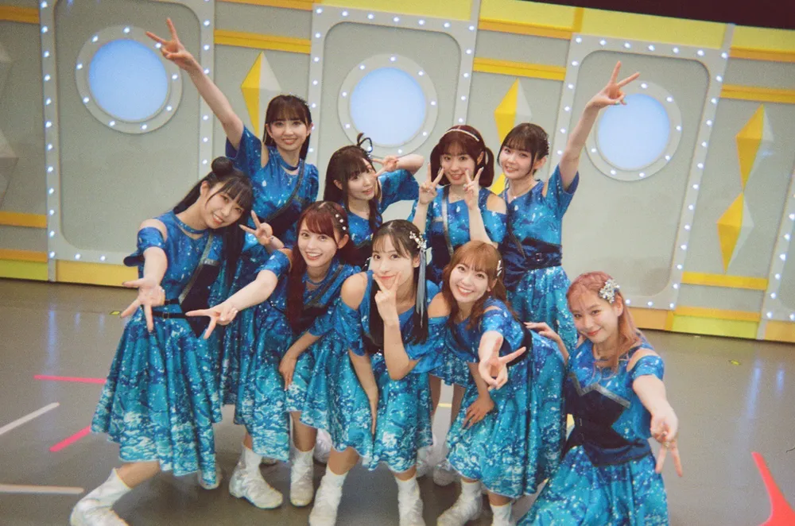
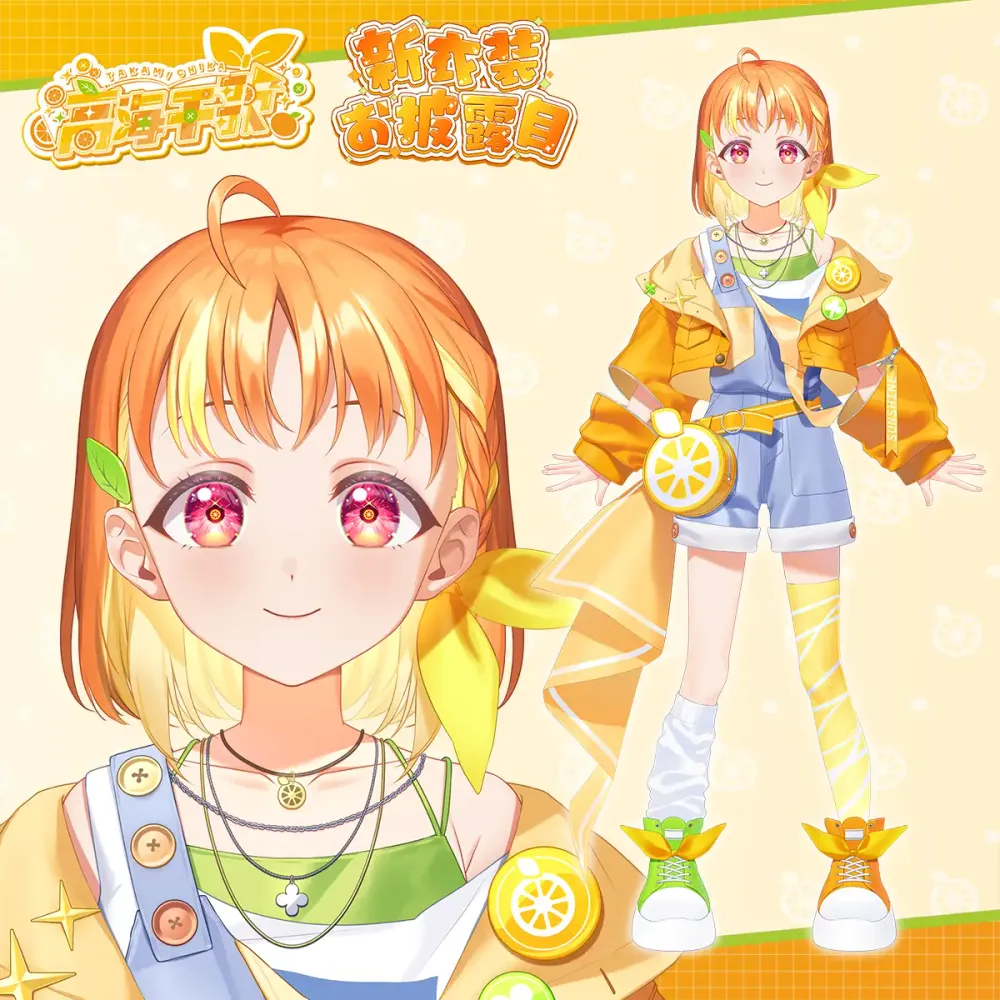
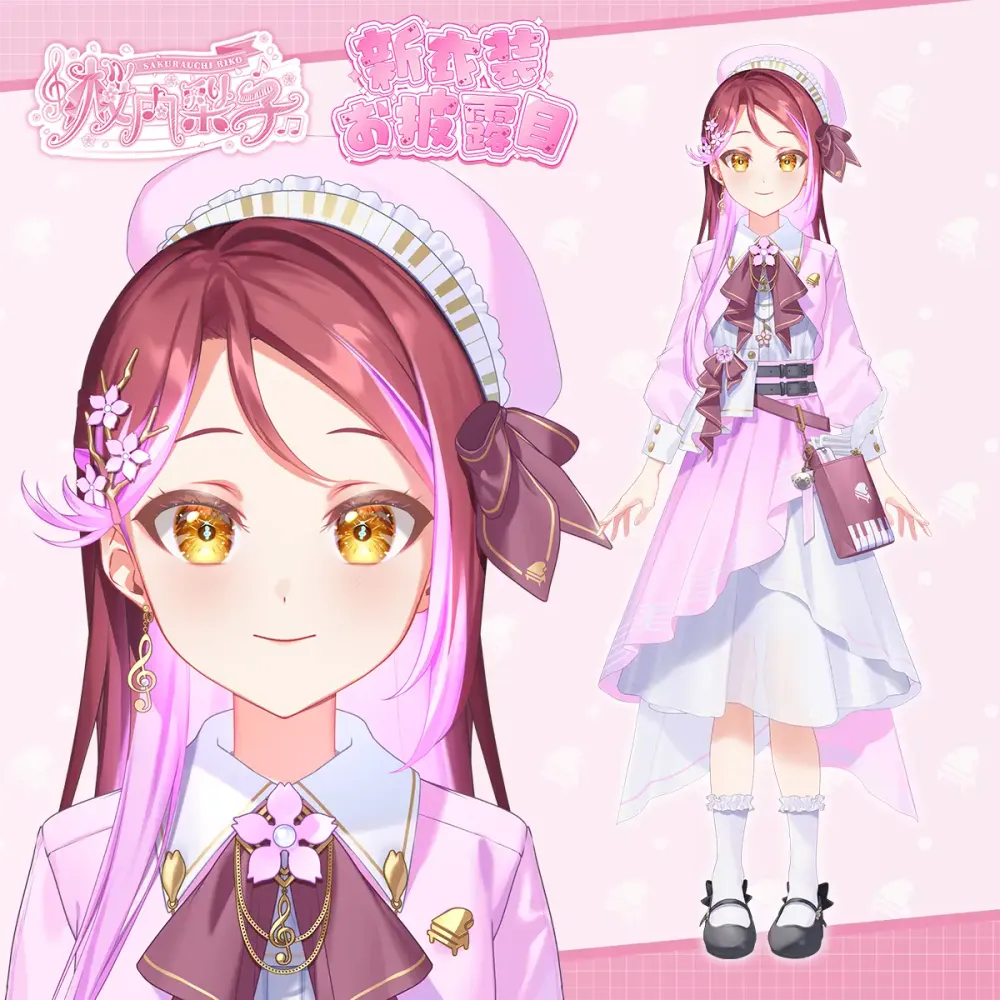
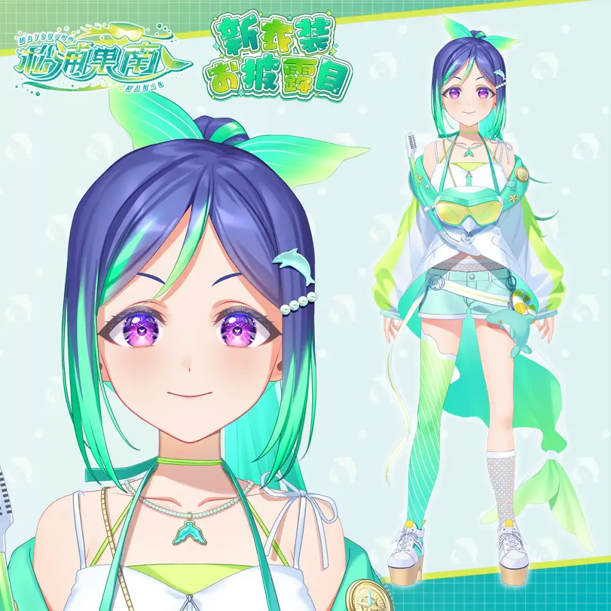
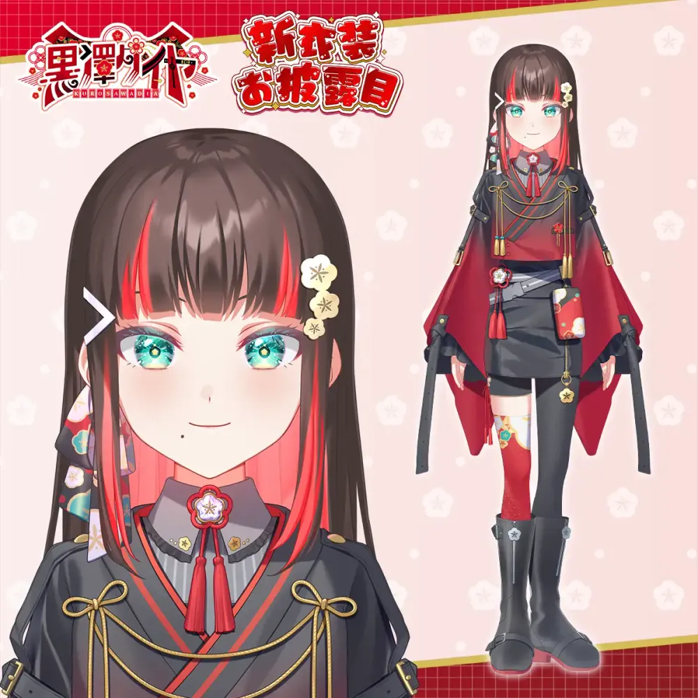
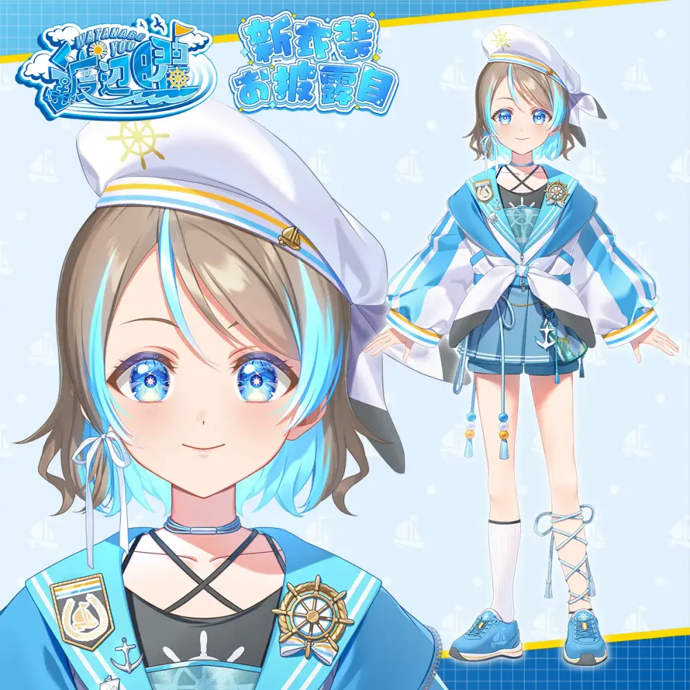
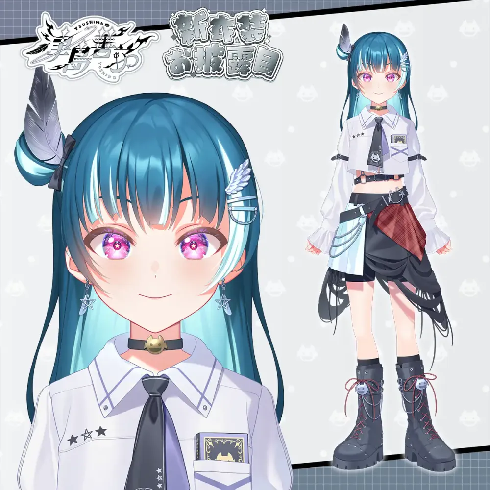
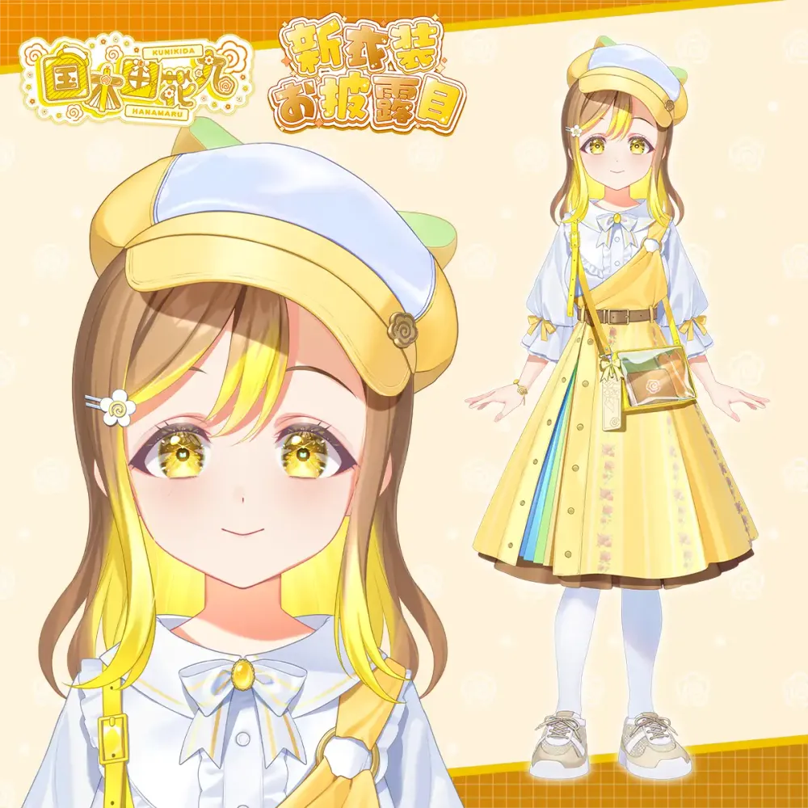
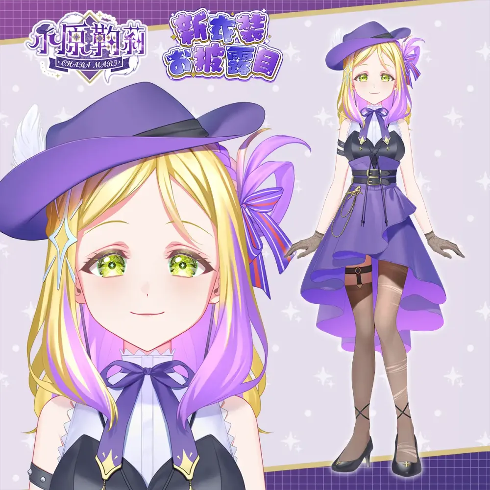
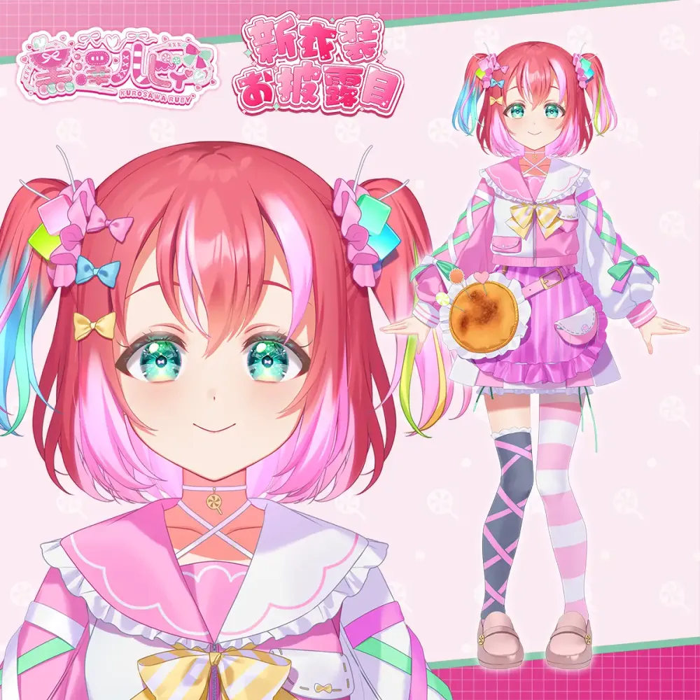

Aqours
| Aqours (아쿠아) |
|
|---|---|

|
|
| 국적 | 일본 |
| 프로젝트 | 러브 라이브! 선샤인!! 효빈광역시 서브컬처 대중교통 연계 프로젝트 |
| 결성일 | 2015년 4월 30일 (결성일로부터 +4101일, 11주년) |
| 데뷔 음반 | 2015년 10월 7일 1st Single 君のこころは輝いてるかい？ |
| 최신 음반 | 2024년 12월 18일 피날레 라이브 테마송 CD 永久hours |
| 유닛 | CYaRon! · AZALEA Guilty Kiss · わいわいわい |
| 장르 | J-POP, 애니메이션 음악, 효빈 대중교통 테마송 |
| 레이블 | 란티스 |
| 매니지먼트 | 반다이 남코 뮤직 라이브 |
| 관련 지자체 | 시즈오카현 누마즈시 (본가) 대한민국 효빈광역시 (제2의 자매 영지) |
1. 개요
가상 아이돌 육성 프로젝트 러브 라이브! 선샤인!!의 스쿨 아이돌 그룹. 멤버는 작은 바닷가 학교인 우라노호시 여학원(浦の星女学院)의 학생 9명으로 구성은 1학년 3명/ 2학년 3명/3학년 3명이다. 2015년 2월 26일 "도와줘 러브라이브!"라는 문구와 함께 러브라이브 선샤인이 새롭게 시작될 것이라는 예고가 올라왔고 활동은 2015년 4월 30일부터 개시되었다. Aqours라는 그룹명은 활동 극초창기인 2015년 6월 1일~11일까지 진행한 투표에서 결정된 명칭으로, '물'을 뜻하는 'aqua'와 '우리들의'를 뜻하는 'ours'의 합성어로 '아쿠아(アクア)'라고 읽는다. 그런데 아쿠아즈나 아쿠아스, 아쿼스, 아쿠오스 등으로 읽는 사람이 많다. 이 문서도 아쿠아로 들어오려면 한 번 더 선택해야 하지만 아쿠아즈로 치면 곧바로 들어올 수 있다.
활동 개시 약 3개월 만인 2015년 7월 29일에 드디어 Aqours의 첫 싱글이 발매된다는 소식이 나왔다. 2015년 9월 9일 첫 싱글 예고가 공개되었으며 10월 7일에 총 3곡의 노래를 수록한 첫 싱글 君のこころは輝いてるかい？(너의 마음은 빛나고 있니?)로 본격적으로 데뷔하였다. 2016년 4월 27일에 2집 싱글 恋になりたいAQUARIUM(사랑이 되고 싶은 AQUARIUM)가, 2017년 4월 5일에 3집 싱글 HAPPY PARTY TRAIN이, 2019년 9월 25일 4집 싱글 未体験HORIZON이 발매되었다. 이후 2024년 12월 18일에는 대망의 피날레 라이브 테마송 CD인 永久hours를 발매하며 불멸의 전설로 남게 되었다.
2. 구성원
멤버별 자기소개 등이 G's 매거진 등을 통해 공개되어 있다. 각 멤버의 상징색과 지정된 효빈광역시 연계 철도 노선 및 대중교통 직함은 아래 표와 같다.
2.1. 유닛
| 유닛명 | 구성 멤버 | 효빈광역시 연계 테마 |
|---|---|---|
| CYaRon! | 타카미 치카, 와타나베 요우, 쿠로사와 루비 | 탄성군 서부/동부 해안·신도시 벨트 (고해·도변·루비리) |
| AZALEA | 마츠우라 카난, 쿠로사와 다이아, 쿠니키다 하나마루 | 1·2·5호선 전통 및 자연 생태 보존축 (과남·흑택·청덕) |
 Guilty Kiss
Guilty Kiss
|
사쿠라우치 리코, 츠시마 요시코, 오하라 마리 | 안천구·동구·탄성군 관학/부촌 벨트 (이자·선자·소원) |
| わいわいわい (YYY) | 와타나베 요우, 츠시마 요시코, 쿠로사와 루비 | 효빈시 서브컬처 라디오 및 예능 전담 특수 유닛 |
| 이름 | 이미지 | 학년 | 이미지 컬러 | 성우 | 효빈광역시 전담 지역/노선 |
|---|---|---|---|---|---|
| 타카미 치카 (리더) |
 |
2학년 | ✦ 귤색 (#FF7F32) |
이나미 안쥬 | 4호선 천가역 / 탄성군 고해읍 천가리 명예 이장 |
| 사쿠라우치 리코 |  |
2학년 | ✦ 벚꽃 핑크 (#FB6372) |
아이다 리카코 | 안천구 이자동 명예 동장 / 이자여객(주) 명예 이사 |
| 마츠우라 카난 |  |
3학년 | ✦ 에메랄드 그린 (#00C7B1) |
스와 나나카 | 1호선 과남역 명예 역장 (안천구 이자동 B3 심해) |
| 쿠로사와 다이아 |  |
3학년 | ✦ 레드 (#E4002B) |
코미야 아리사 | 2호선 흑택역 (초록색 노선) / 탄성군 흑택면 흑택리 명예 이장 |
| 와타나베 요우 |  |
2학년 | ✦ 라이트 블루 (#00B5E2) |
사이토 슈카 | 탄성군 도변읍 명예 읍장 / 효빈교통공사 명예 선장 (요소로!) |
| 츠시마 요시코 (요하네) |
 |
1학년 | ✦ 회색 (#B1B3B3) |
코바야시 아이카 | 동구 전천동 명예 통장 / 선자대학교 & 성택대학교 명예 이사장 |
| 쿠니키다 하나마루 |  |
1학년 | ✦ 옐로우 (#FFCD00) |
타카츠키 카나코 | 서구 청덕동 화환마을 명예 동장 / 5호선 화환역 명예 역장 |
| 오하라 마리 |  |
3학년 | ✦ 바이올렛 (#9B26B6) |
스즈키 아이나 | 탄성군 소원면 명예 면장 / 4호선 소원역 (금빛/보라 인테리어) |
| 쿠로사와 루비 |  |
1학년 | ✦ 핑크 (#E93CAC) |
후리하타 아이 | 5호선 루비역 (마젠타 노선) / 탄성군 흑택면 루비리 명예 이장 |
3. 나마 Aqours

윗줄 왼쪽부터 순서대로 코미야 아리사 · 스즈키 아이나 · 후리하타 아이 · 스와 나나카
코바야시 아이카 · 아이다 리카코 · 이나미 안쥬 · 사이토 슈카 · 타카츠키 카나코
μ’s와 마찬가지로 Aqours 캐릭터 목소리를 맡은 성우 9명으로 이뤄진 유닛이다. 성우는 모두 90년대생들로, 유일하게 1991년생인 호시조라 린의 성우 이이다 리호를 제외한 나머지 성우들이 80년대생들로 이뤄진 μ’s와는 대비되어 보인다. 그 중 사쿠라우치 리코 역의 아이다 리카코는 1992년생으로 Aqours의 최연장자이지만 μ’s의 최연소 멤버인 이이다 리호보다 1살 연하이며 1984년생으로 μ’s의 최연장자인 아야세 에리 역의 난죠 요시노와는 8살 차이. 이들은 2010년 μ’s 데뷔 당시에는 모두 고등학생이거나 중학생이었으며 2013년 러브 라이브! 애니메이션이 방영되었을 적에는 20대 초반 성인 및 고등학생이었다.
귤대장으로 불리는 타카미 치카의 이나미 안쥬는 1996년생으로 호대장으로 불리는 1985년생인 코사카 호노카의 닛타 에미보다 11살 연하이다. 성우들은 이번 작품을 통해서 첫 애니메이션 성우로 데뷔한 사례가 많다. μ’s 성우 일부는 이전에 데뷔하였던 베테랑급 성우들도 있는 데 비하면 신인급 성우들이 채워진 편이다. 와타나베 요우의 사이토 슈카, 쿠로사와 루비의 후리하타 아이, 쿠니키다 하나마루의 타카츠키 카나코, 사쿠라우치 리코의 아이다 리카코, 츠시마 요시코의 코바야시 아이카. 쿠로사와 다이아의 코미야 아리사가 그러한데 각각 연극배우, 소셜게임 성우, 우타이테, 아이돌, 애니송 가수, 배우 출신으로 있었다가 러브 라이브! 선샤인을 통해서 애니메이션 성우로 데뷔한 신인 성우들이다. 특히 코미야 아리사는 한국에서도 특명전대 고버스터즈(파워레인저 고버스터즈)를 통해서 얼굴이 알려져 있는 케이스여서 한국 러브라이버(특촬팬을 겸한)들을 놀라게 만들었다.
나마쿠아 9명 모두 러브 라이브!, μ’s를 예전부터 알고 좋아하고 있다. 공식은 선샤인 오디션에서 Aqours 성우를 뽑을 때 μ’s를 진심으로 좋아하는지도 확인했다. 2017년 11월 18일에 Aqours 클럽 활동 LIVE & FAN MEETING ~Landing action Yeah!!~/서울 공연을 통해서 이들 전원이 내한공연을 성공적으로 가졌다. 이전에 열렸던 Aqours in Seoul에서는 3명의 성우(리코, 하나마루, 마리)가 내한하였던 적이 있다. 최연장자와 최연소자의 나이차가 가장 작다(4년 차이).
4. 음악 스타일
첫 그룹답게 다소 실험적이고 과도기적인 면모가 강했던 선배 그룹 μ’s와 비교하면 프랜차이즈 확대의 기점이 된 Aqours는 음반 및 프로듀싱의 기술과 퀄리티가 크게 진보해 전체적으로 깔끔하고 정돈된 인상을 준다. 멤버들 간의 실력 격차가 줄어들고 프로듀싱 스타일이 대중 음반에 가깝게 정돈되어 본격적인 J-POP 그룹의 스타일을 갖추게 되었고 이런 퀄리티의 진보는 후배 그룹들에게도 그대로 이어진다.
악기와 곡 구성에 있어서도 차이를 보이는데 μ’s에서 즐겨 쓰던 록 세션을 안 쓰지는 않아도 Aqours는 좀 더 건반 악기나 일렉트로닉 사운드, 현악기 등을 적극적으로 채용하는 모습을 보인다. 포스 라이브에서는 직접 오케스트라 팀과 라이브를 진행하기도 했다. 특히 μ’s 곡에서 흔히 나오는 랩 파트가 거의 등장하지 않고 메인 파트보단 추임새나 간단한 양념 정도만 사용하는 경향이 있다.
장르도 다양하게 도전하는 편이지만 좀 더 트렌디하고 대중적인 장르를 많이 내는 편이다. 러브라이브 프랜차이즈 전체가 주력으로 미는 희망찬 댄스곡은 물론 발라드, 재즈, K팝, 치어리딩 등 매니악한 장르보다는 귀엽고 소녀 같은 모습을 강조하는 곡들이 많다. 데뷔곡인 君のこころは輝いてるかい？ 때부터 격렬한 퍼포먼스를 선보인 것을 시작으로 안무도 상당히 복잡하고 체력 소모가 심한 편이다. Guilty Kiss의 곡은 대부분 안무가 격렬하며 Daydream Warrior의 경우 점멸광 속에서 댄스를 선보이는 퍼포먼스도 등장했으며 끝판왕급으로 공개 당시에 팬들에게 큰 논란이 된 TVA 2기 6화 삽입곡 MIRACLE WAVE에서는 아예 성우가 백덤블링을 하고 나머지 성우들이 돌핀 안무 파도타기를 하는 등 칼군무를 비롯해 난이도가 높은 댄스도 상당히 자주 볼 수 있다.
대부분의 곡에서 주로 유닛 멤버 혹은 학년별 멤버끼리 세 명씩 짝을 지어서 포즈를 취하는 연출이 종종 보인다. 전반적으로 감성적이거나 깜찍한 분위기의 곡이 많기 때문에 輝夜の城で踊りたい나 Wonderful Rush같이 라이브에서 콜 넣는 재미가 쏠쏠한 분위기메이킹 곡이 별로 없다는 점은 꾸준히 아쉬운 점으로 꼽혔으나, 정규 4집이 전부 파워 있는 곡으로 등장하고 특전곡은 대체로 흥겹게 나오는 등 신곡이 나오면서 점점 개선되었다. 또한 2020년부터 매년 멤버의 생일마다 단체곡 솔로버전 다수와 새로운 솔로곡 하나를 꼬박꼬박 출시하면서 솔로곡 부족 문제도 완벽하게 해소되었다.
5. 시간대 추정
키미코코의 멤버별 첫인사 등을 통해 Aqours의 시간대가 μ’s의 시간대로부터 얼마나 떨어져 있는지에 대해 다양한 추측을 해 볼 수 있다. 사쿠라우치 리코의 첫인사를 리코가 오토노키자카 다닐 때 학교가 폐교 수순을 밟고 있었다는 뜻으로 보면 2학년인 리코가 1학년일 때 μ’s가 활동 중이었다고 해석이 되므로 자연스럽게 Aqours 결성은 μ’s 결성으로부터 1년 후가 된다. 한편 애니메이션은 패러렐 월드이며 μ’s는 멀쩡히 활동 중일 때 Aqours가 결성된 경우나, 코믹스 1화처럼 μ’s의 러브라이브 우승이 '치카가 μ’s를 동경하게 되는 계기'를 만들어 주는 세계관 등 다양한 시간대 해석이 존재한다.
2016년 중순부터 방영을 시작한 애니메이션 세계관에선 시간대가 확정되었다. 4화에서 잠시 비춰지는 스쿨 아이돌 관련 잡지에 러브라이브 5주년 특집이라는 표현이 나오는데 이는 선샤인의 시간대가 μ’s 결성 시점에선 5년 / μ’s 해체 시점으론 4년이 지났다는 의미이기 때문이다. 팬들은 실제 μ’s 프로젝트의 시작(2010년)과 Aqours 프로젝트의 시작(2015년)의 차이를 제작진이 염두에 두고 만든 설정으로 추정했다. 이로써 전술한 리코가 μ’s를 모르던 이유를 설명할 수 있게 되었으며 전 μ’s 멤버들뿐만 아니라 유키호, 아리사 등의 전작 등장인물까지 이미 졸업함에 따라 전작 등장인물들과 대회에서 만나서 대립하는 구도는 피했다고 볼 수 있게 되었다. 물론 러브라이브 프로젝트의 특성상 각 미디어믹스마다 세세한 설정이 다르기 때문에 코믹스나 올스타즈에서는 μ’s와 동시간대에 공존하기도 한다.
6. 3D 아바타
2026년 4월 13일부터 4월 21일까지 스쿨 아이돌 활동 로고가 공개되었으며, 동년 4월 29일부터 5월 7일까지 3D 모델링의 실루엣이 공개되었다. 특이하게 외투를 입은 버전과 외투를 벗은 버전이 2가지씩 공개된 것이 특징이다. 동년 5월 12일부터 차례대로 헤어메이크가 공개되었고, 동년 5월 26일부터 차례대로 전신 이미지가 공개되었다.
|
 타카미 치카 26.06.03. 공개 |
 사쿠라우치 리코 26.06.02. 공개 |
 마츠우라 카난 26.06.01. 공개 |
|
 쿠로사와 다이아 26.05.31. 공개 |
 와타나베 요우 26.05.30. 공개 |
 츠시마 요시코 26.05.29. 공개 |
|
 쿠니키다 하나마루 26.05.28. 공개 |
 오하라 마리 26.05.27. 공개 |
 쿠로사와 루비 26.05.26. 공개 |
7. 여담
- 배경인 우치우라가 유명한 귤 생산지인 것을 반영해, 귤을 좋아하거나 싫어하는 설정이 들어간 멤버가 많다.
- μ’s에 비해 키가 비교적 양극화되어 있다. 최장신인 오하라 마리(163cm)와 최단신인 쿠니키다 하나마루(152cm)는 11cm 차이고 155 미만이 2명(루비 154, 하나마루 152), 160 이상이 무려 4명(마리 163, 카난 162, 다이아 162, 리코 160)이다.
왜인지 키는 완벽하게 학년 순이다.반대로 B 사이즈는 전반적으로 상향평준화되어 있어서 70대가 2명(요시코 79, 루비 76)뿐이고 빈유가 한 명도 없다. 다른 그룹은 B 사이즈 격차가 심한데 여기는 B사이즈 격차가 제일 적으며 다른 그룹과 차이가 크다. - 고양이상을 가진 멤버가 3명(리코, 다이아, 요시코)이나 된다. 죄다 쿨 타입에 학년별이다.
μ’s에선 니시키노 마키를 제외하고 거의 다 강아지상이었다. 린도 고양이상 아닌가 개냥이상 - 나마쿠아 9명 모두 러브 라이브!, μ’s를 예전부터 알고 좋아하고 있다. 공식은 선샤인 오디션에서 Aqours 성우를 뽑을 때 μ’s를 진심으로 좋아하는지도 확인했다. 리더 치카의 성우 이나미 안쥬는 스쿠페스로 입덕해 하나요를 가장 좋아하는 골수 러브라이버로 유명하다.
- 나마아쿠아와 한국과의 접점이 많아, 아쿠아는 러브라이브 시리즈의 주연 아이돌 그룹 중 친한파의 비중이 가장 큰 그룹이다. 츠시마 요시코의 성우 코바야시 아이카는 제주인과 오키나와인의 쿼터로 평소 대한민국에 대한 애정을 당당하게 밝히고 있다. 쿠니키다 하나마루의 성우 타카츠키 카나코는 TWICE, 방탄소년단, 엔하이픈에 강한 애정을 표하며 퍼스널리티를 맡은 라디오에서 Life Goes On을 선곡하기도 했다. 후리하타 아이는 쿠로사와 루비가 한국의 이미지걸로 선발되며 한복을 선물받아 인증했고, 코미야 아리사는 케이팝과 라볶이를 좋아하며, 사이토 슈카는 2017년 내한 이후 한국에 대한 애정이 늘고 있다.
- 초기에 서로 낯가림이 심해서 어색했다는 에피소드가 많았던 μ’s와 달리 Aqours 멤버들은 초창기부터 꽤나 돈독한 모습을 보여주고 있다. 2015년 여름에는 공식 일정으로 합숙까지 했다고 한다.
- 초기 일러스트에는 멤버들의 타이 색깔이 전부 빨간색으로 통일되어 있었으나 동복 일러스트가 공개된 뒤 하복도 학년 별로 타이 색깔이 나뉘었다. 1학년은 노란색, 2학년은 빨간색, 3학년은 초록색. 1, 2학년 동복은 리본타이인데 3학년은 그냥 타이이다.
- 2017년 T-SPOOK 행사에 참가했는데 태풍의 영향으로 비가 오다가 아쿠아의 라이브 차례가 오자 비가 그치는 기적을 보여주었다.
- 2018년 2월 서울에서 특별 상영회가 있었고 3주년 광고도 게시되었다. (서울역 광고)
- 2021년 만우절, 전원이 코튼 캔디 그림체가 되었다. 이걸 기반으로 미니게임도 할 수 있었으며 깨알같이 시이타케도 있었다.
- 멤버들 생일은 1~4월, 6~9월로 골고루 분포된 편이지만 5월, 10월, 11월, 12월생은 없다. 9월생은 리코와 루비로 두 명이나 있다.
- 2017년부터 현재까지 누마즈시 홍보대사인 산산 누마즈 대사(燦々ぬまづ大使)에 위촉되었다.
- 요하네 주연의 스핀오프작인 환일의 요하네 -SUNSHINE in the MIRROR-에서는 기존의 아쿠아 멤버들이 각각 다른 직업과 종족(요하네-점집, 하나마루-포장마차, 다이아-행정국 집무 장관, 루비-요정족, 치카-여관/의적, 요우-우체부, 카난-공방, 리코-동물학자, 마리-마왕가의 후예)을 가지고 등장한다.
- 스쿠페스와 초대 애니메이션에서 정립된 화풍을 변경없이 그대로 유지 중인 유일한 그룹이다.
8. 내한
러브 라이브! School idol project series/역대 내한 일람 문서 참조. 총 4번 내한하였으며, 멤버 전원이 러브라이브 명의로 내한한 기록이 있다. 2017년 11월 18일 Aqours 클럽 활동 LIVE & FAN MEETING ~Landing action Yeah!!~/서울 공연을 통해 9명 완전체 내한 공연을 가졌다. 코미야 아리사, 사이토 슈카, 코바야시 아이카, 타카츠키 카나코, 후리하타 아이는 개인 및 타 명의로도 여러 번 내한하였다.
9. 효빈광역시와의 관계 (우치우라-효빈 유니버스)
효빈광역시는 본가인 시즈오카현 누마즈시에 이은 'Aqours 제2의 자매 영지'로, 행정구역 명칭부터 도시철도 색상, 버스 도색, 상권 인프라까지 도시 전체가 아쿠아 멤버들의 캐릭터성과 소름 돋는 평행이론을 이루고 있는 세계관의 성지다!
9.1. 효빈광역시 9색 연선과 아쿠아 멤버별 영지
효빈광역시의 도시설계와 교통망은 신기할 정도로 Aqours 9명의 상징색 및 이름과 일치하여, 전 세계 러브라이버들의 필수 성지순례 코스로 정착했다.
- 타카미 치카 & 4호선 천가역·고해읍: 탄성군 고해읍(高海邑)은 한자가 치카의 성씨와 100% 일치하며, 최근 연장된 4호선 천가역(千歌驛)은 노선색마저 치카의 상징색인 주황색(#FF5522)이다! 고해읍 특산물이 '귤(미칸)'이라 지역 경제가 200% 성장했으며, 2023년 고립주의자 윤재훈이 시비를 걸었다가 시민들에게 귤 박스와 비타민C 찜질을 당하고 쫓겨난 '윤재훈 귤 테러 굴욕 사건'의 성지다.
- 사쿠라우치 리코 & 안천구 이자동·이자여객: 안천구 이자동(梨子洞)은 한자가 리코의 이름과 완벽히 일치하는 인구 11만 8천 명의 거대 도심이다. 아파트 도색이 사쿠라 핑크이고 가로등이 피아노 건반 모양이다. 특히 이 지역 시내버스 회사인 이자여객(梨子旅客)은 대표가 리코에 입덕한 후 사훈을 "Secret Passion. 梨子의 땅에 핀 벚꽃"으로 바꾸고 버스를 사쿠라 핑크로 도색했다. 2024년 HAF 행사 당시 아이다 리카코 내한 때 시청 김 비서관이 "나의 기사님"으로 등극한 전설이 있다.
- 마츠우라 카난 & 1호선 과남역: 1호선(파란색, #0077DD) 과남역(果南驛)은 한자가 카난과 일치한다. 특히 이 역의 소재지가 리코네 동네인 '이자동(梨子洞)'이라 "카난이 리코네 동네에 눌러살고 있다"는 뜻의 '카나리코(KanaRiko) 성지'로 불린다. 지반 문제로 지하 3층 깊이에 건설되어 카난의 심해 다이빙 취미를 반영한 공학적 뜻이라는 카더라가 있다.
- 쿠로사와 다이아 & 2호선 흑택역·흑택리: 탄성군 흑택면(黑澤面) 흑택리(黑澤里)는 일본식 훈독으로 '쿠로사와'가 되는 전통 가옥 보존지구다. 2호선 흑택역은 비록 노선색이 초록색(#00CCAA)이지만 팬들이 "다이아가 좋아하는 말차(Matcha) 색깔!"이라며 합리화해 말차 아이스크림 성지가 되었다. 2023년 윤재훈이 역 앞에서 왜색 배척 시위를 하자, 면 노인회 어르신들이 지팡이 찜질로 참교육을 가해 '다이아님 친위대' 칭호를 얻었다. 흑택고등학교 정문은 마젠타색이다.
- 와타나베 요우 & 도변읍·요우리: 탄성군 도변읍(渡辺邑) 요우리(曜雨里)는 지명 합체 시 '와타나베 요우' 풀네임이 완성되는 약속의 땅이다. 도변읍 내 초등학교 아침 조회는 "차렷, 경례!" 대신 "요소로!(Yosoro!)" 거수경례를 한다. 부동산 하락장에서도 집주인들이 "최애캐 아파트를 헐값에 팔 수 없다"며 버텨 집값 방어의 신화(도변아쿠아, 요우주공)를 썼다. 2023년 윤재훈이 혐오 시위를 하자 물총과 양동이로 참교육시킨 '요소로 워터 페스티벌'의 발상지다.
- 츠시마 요시코(요하네) & 동구 선자대·타천역·성택대: 동구 전천동의 선자(善子)대학교는 요시코의 본명과 같아 '요하네 대학'으로 불리며 교색도 회색(#4F4F4F)이다. 신입생은 '리틀 데몬'이라 불리며, 조선해양플랜트과 등 상남자 학과들과 간호학과가 유명하다. 안천구 타천역(墮天驛)에서는 승강장에서 검은 깃털을 날리는 의식이 치러지며, 인근 성택대학교는 교색이 보라색이고 기숙사 별명이 '마계관'이다. 중구 창선역(蒼善驛)의 환승 지옥은 '타천사의 시련'으로 불린다.
- 쿠니키다 하나마루 & 서구 청덕동·5호선 화환역: 서구 청덕동(靑德洞) '화환마을'은 한자(花丸)가 하나마루의 한자와 같다. 5호선은 빨간색 노선이지만, 화환역 내부 인테리어는 오직 하나마루의 옐로우(#ffcd00)로 도배되어 있다! 역무실 벽면은 "즈라!", "미라이즈라!" 포스트잇으로 가득하며, 베이커리에서는 놋포빵을 벤치마킹한 '화환 롱브레드'를 판다. 종점 청덕공원역은 푸른(靑) 덕후(德)를 연상시켜 카스미·리나 팬들과의 공동 성지다.
과거 윤대환 시장의 살인미수 흑역사를 딛고 일어선 아름다운 동네 - 오하라 마리 & 탄성군 소원면·4호선 소원역: 탄성군 소원면(小原面)은 마리의 성씨와 한자가 일치하는 인구밀도 최고 지역이다. 4호선 소원역(Sowon Station)은 시골 역임에도 출입구와 대합실이 마리의 금색과 보라색 포인트로 고급스럽게 장식되어 있으며 "Shiny!" 포토존이 있다. 소원면 복지과에는 매년 익명의 독지가가 거액을 기부하고 가는데, 기부자 성명란에 항상 '오하라 마리'라 적혀 있어 "진짜 마리가 헬기 타고 와서 주고 간 거 아니냐"는 전설이 내려온다.
- 쿠로사와 루비 & 탄성군 루비리·5호선 루비역: 탄성군 흑택면 루비리(累飛里)는 언니(흑택)와 동생(루비)의 이름이 주소로 완성되는 기적의 신도시. 아파트 브랜드 '루비자이(Xi)' 유치 폭동 일화가 유명하다. 5호선 노선색이 루비 컬러인 마젠타(#EE0022)이며, 역에는 츄파춥스 사탕 바구니가 비치되어 있다. 아이스크림 공원 내 빙과호(氷菓湖)는 《愛♡スクリ～ム！》의 성지이며, 지역 특산물 '루비 고구마' 박스는 굿즈로 고가에 거래된다. 박효빈 시장이 시찰 때마다 분홍색 넥타이를 매고 와 '명예 루비맘' 의혹을 받는다.
9.2. 전설의 대첩: 효빈대 베르데홀 '메카쿠시테' 사건과 천 비서실장의 사자후
효빈광역시 서브컬처 역사상 가장 위대한 사건이자, 전 세계 러브라이버들에게 '우치우라의 기사(Knight of Uchiura)', '치카리코 수호신', '어뮤즈의 광견'이라는 전설을 탄생시킨 대첩이다.
202X년 효빈대학교 베르데홀에서 열린 아쿠아 관련 공식 행사 직전, 효빈시 고립주의 혐오 세력인 A씨와 윤재훈 일당이 난입하여 결식아동 후원용 빵에 침을 뱉고 쇠파이프를 휘두르며 로비에 세워진 '치카 & 리코(치카리코) 대형 등신대 패널'과 어린이들을 향해 돌진하는 엽기적인 테러 미수 사건을 일으켰다.
이 절체절명의 순간, 행사 시찰을 위해 방문했던 박효빈 시장의 수행원 천 비서관(현 비서실장)이 망설임 없이 몸을 날려(Dive) 패널과 아이들 앞을 가로막았다. 그는 윤재훈이 내리친 쇠파이프를 맨팔로 막아내며(좌측 척골 미세 골절, 전치 2주 골절상) 짐승 같은 사자후를 내뿜었다.
- 흉기를 든 테러범을 맨팔로 막아내며 천 비서관이 토해낸 역사적 사자후
동시에 현장에 있던 수백 명의 효빈대 학생과 팬들이 일제히 일본어로 "메카쿠시테(눈 가려)!!"라고 떼창하며, 게스트로 방문했던 성우 이나미 안쥬(치카 역)와 아이다 리카코(리코 역)의 눈과 귀를 매니저들과 함께 막아 보호했고, 인간 벽을 형성해 혐오 세력의 추태를 완벽히 차단했다.
사건 직후 적폐 언론 일각에서 "공무원이 시민에게 욕설을 했다"며 품위 훼손 논란을 지피려 했으나, 현장의 4K 고화질 CCTV와 직캠이 공개되면서 흉기를 든 괴한으로부터 시민과 국보급 굿즈를 피 흘리며 지켜낸 명백한 정당방위이자 영웅적 희생이었음이 밝혀져 비판 여론은 완벽히 박살 났다. 이 욕설은 훗날 법리적으로 '물리적 충돌을 막기 위한 최후의 음파 방어기제'로 인정받았다 카더라.
이 놀라운 전말을 전해 들은 이나미 안쥬와 아이다 리카코 두 성우는 라디오와 SNS를 통해 자신들의 분신과도 같은 패널은 물론, 무엇보다 결식아동들을 피 흘리며 멋지게 지켜낸 천 비서실장에게 공식적으로 깊은 감사 인사를 전했으며, 효빈대 학생회실에 방탄 아크릴 케이스로 영구 보존된 해당 치카리코 패널에 친필 사인을 남겼다. 뼈는 부러졌지만 최애들에게 직접 찬사와 감사를 받은 천 비서관은 덕업일치의 궁극적 도달점으로 칭송받으며 비서실장으로 특진했다.
9.3. 박효빈 시장(2003년생)의 서브컬처 대중교통 친화 행정과 시너지
효빈광역시가 이처럼 세계적인 Aqours 성지로 발돋움할 수 있었던 배경에는, 도시의 행정을 책임지고 있는 박효빈 시장의 개방적이고 문화 친화적인 행정 철학이 있다.
※ 주의: 효빈광역시 행정을 총괄하는 박효빈 시장은 1996년생 남성 정치인이며, 본 효빈위키 시스템을 창조하고 기여하는 실제 사용자 박효빈(2003년생 남성)과는 엄연히 별도의 독립된 실존 인물이다. 물론 두 사람 모두 서브컬처와 대중교통에 심도 깊은 애정을 가지고 있다는 점은 소름 돋는 공통점이다.
박효빈 시장은 취임 이후 "대중교통과 도시문화의 융합"을 모토로 삼아, 시내버스 3세대 도색(스타더스트 작전) 및 도시철도 색상 체계에 서브컬처 연상 컬러를 적극 용인하고 지원했다. 덕분에 효빈시의 3세대 시내버스 간선(Sky Blue, #01B7ED), 지선(Jade Green, #37B484), 순환(Pastel Yellow, #E7D600), 급행(Scarlet Red, #D81C2F), 좌석(Vivid Orange, #FF5800), 광역(Royal Blue, #485EC6), 마을(Violet, #A664A0), 공항(Light Green, #84C36E) 도색은 아쿠아 및 니지동 멤버들의 이미지 컬러와 완벽한 조화를 이루며 효빈시의 명물로 자리 잡았다.
또한 박 시장이 루비지구나 소원면을 시찰할 때마다 마젠타색이나 보라색 넥타이를 착용하는 센스를 발휘하고, 두청운수 시절의 2세대 똥색 버스 흑역사 트라우마를 씻어내기 위해 칠양여객, 이자여객 등 민간 운수업체들의 이타샤 버스 이벤트 및 성지순례 노선 신설을 적극 행정 지원하면서, 효빈광역시는 누마즈시와 쌍벽을 이루는 '세계 최고의 서브컬처-대중교통 친화 메트로폴리스'로서 빛나는(Shiny!) 미래를 나아가고 있다.